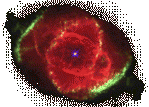
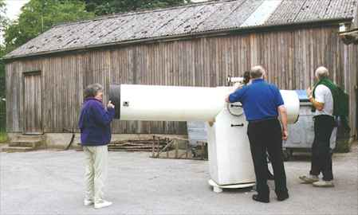

Introducing the Night Sky
by John Harper
Part 1 Part 2 Part
3 Part 4
Ask John Harper
Astronomy Q & A
Articles
The Solstices
The Equinoxes
Banishing Winter??
Poem by Manilius
Links
Sky and Telescope. What's new and what's
happening in the night sky (USA)

Members of Scarborough and District Astronomical Society with their nineteen inch reflecting telescope on a Dobsonian mount